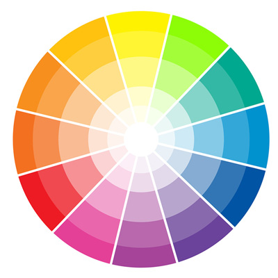

O que é o circulo cromatico?
Um círculo cromático é uma representação visual das cores organizadas em uma forma circular. Ele inclui as cores primárias (vermelho, amarelo e azul), as cores secundárias (obtidas pela mistura das primárias, como laranja, verde e roxo) e as cores terciárias (obtidas pela mistura de uma primária com uma secundária adjacente).
O círculo cromático é utilizado em diversas áreas, como arte, design, moda e fotografia, para ajudar na seleção de cores harmoniosas, na compreensão das relações entre as cores e na criação de esquemas de cores agradáveis visualmente. Ele também pode ser usado para entender conceitos como cores complementares, análogas, triádicas, entre outras.
Cores
Cores Primarias
- Amarelo
- Vermelho
- Azul
Cores Secundarias
- Laranja (Vermelho + Amarelo)
- Roxo (Vermelho + Azul)
- Verde (Amarelo + Azul)
Cores Terciarias
- Amarelo-esverdeado (Amarelo + Verde)
- Amarelo-alaranjado (Amarelo + laranja)
- Azul-esverdeado (Azul + Verde)
- Azul-arroxeado (Azul + Roxo)
- Vermelho-Alaranjado (Vermelho + Laranja)
- Vermelho-Arroxeado (Vermelho + Roxo)
Harmonia de cores
Cores Complementares
Cores complementares são pares de cores que estão diretamente opostas umas às outras no círculo cromático. Quando combinadas, essas cores criam um forte contraste e tendem a intensificar uma à outra. Exemplos comuns incluem vermelho e verde, azul e laranja, amarelo e roxo.
Cores Analogas
Cores análogas são aquelas que estão próximas umas das outras no círculo cromático. Elas compartilham matizes semelhantes e geralmente se harmonizam bem quando usadas juntas em um design. Por exemplo, tons de verde, amarelo e azul são cores análogas.